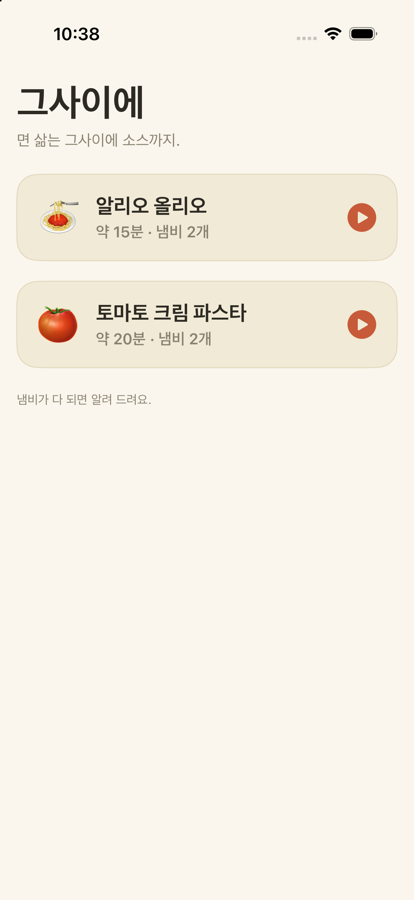
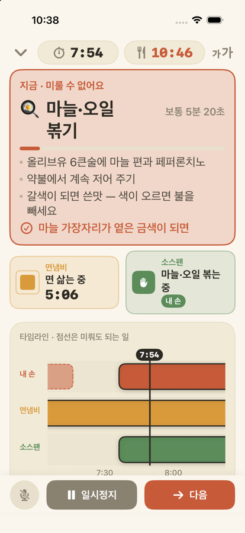

면 삶는 그사이에 소스까지.
요리가 어려운 건 손이 느려서가 아니라, 냄비 두 개의 시간이 서로 다르게 흐르기 때문입니다. 면은 사람을 기다려 주지 않고, 마늘 써는 일은 언제 해도 됩니다. 그사이에는 이 둘을 구분해서, 지금 손이 할 일 하나만 크게 보여 줍니다.
면 건지기, 타기 직전의 마늘. 시간이 되면 화면이 붉어지고 하던 일을 멈추라고 알려 줍니다.
썰기, 갈기, 계량. 손이 빌 때만 진행되고, 냄비가 부르면 멈췄다가 돌아와서 이어서 합니다.
면냄비와 소스팬이 각각 무엇을 하는 중인지, 얼마나 남았는지 따로 보여 줍니다.
손이 젖어 있으면 “다음”이라고 말하세요. 한국어 음성 인식은 가능한 한 기기 안에서 처리합니다.
조리대에 올려 두고 한두 걸음 떨어져 봅니다. 글자 크기는 앱 안에서 네 단계로 키울 수 있습니다.
내 손이 하는 일에는 초를 세지 않습니다. 막대가 차오르다 멈추고 기다립니다.


| 초록 | 도마 일입니다. 천천히 해도 됩니다. |
|---|---|
| 테라코타 | 미루면 면이 퍼지거나 탑니다. 지금 해야 합니다. |
| 냄비 칸 | 네모가 줄어드는 만큼이 남은 시간입니다. 냄비는 반드시 지켜야 하는 시계라 여기서는 시간을 숨기지 않습니다. |
| 알리오 올리오 | 약 15분 · 냄비 2개 · 출처 Serious Eats, Gimme Some Oven |
|---|---|
| 토마토 크림 파스타 | 약 20분 · 냄비 2개 · 출처 RecipeTin Eats, The Burnt Butter Table |